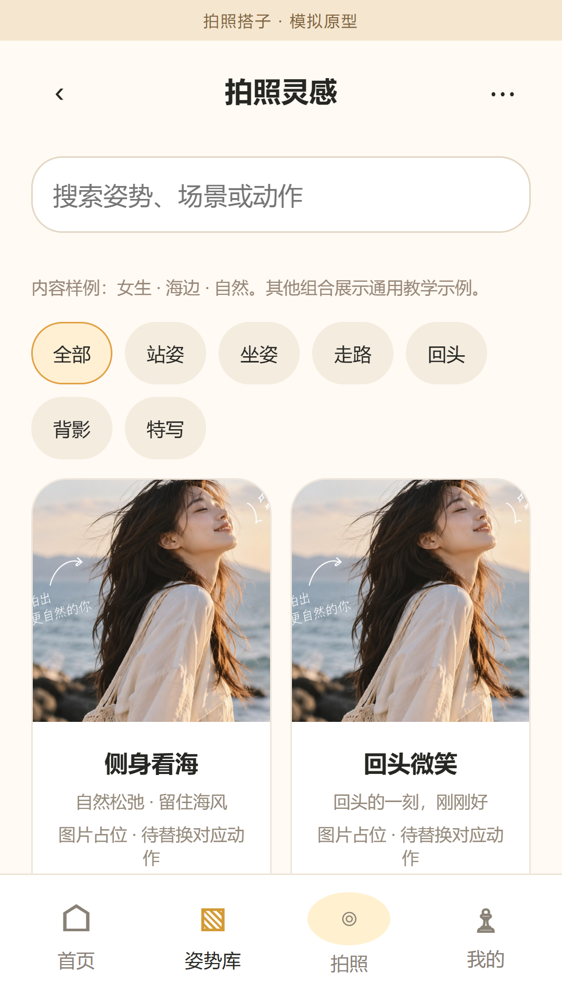
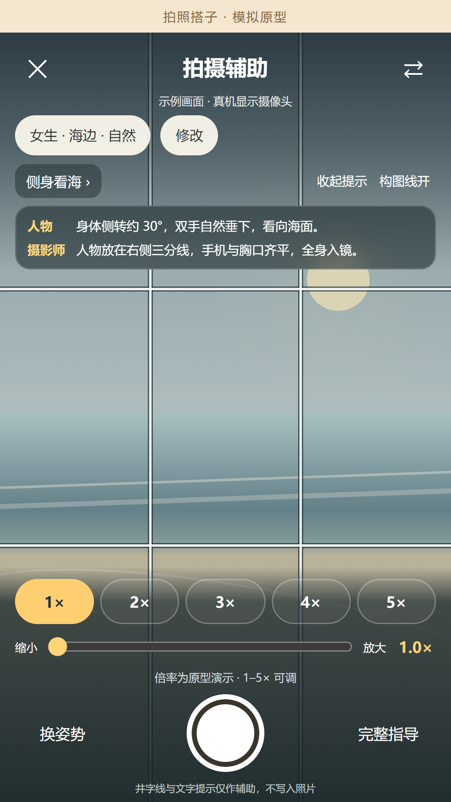
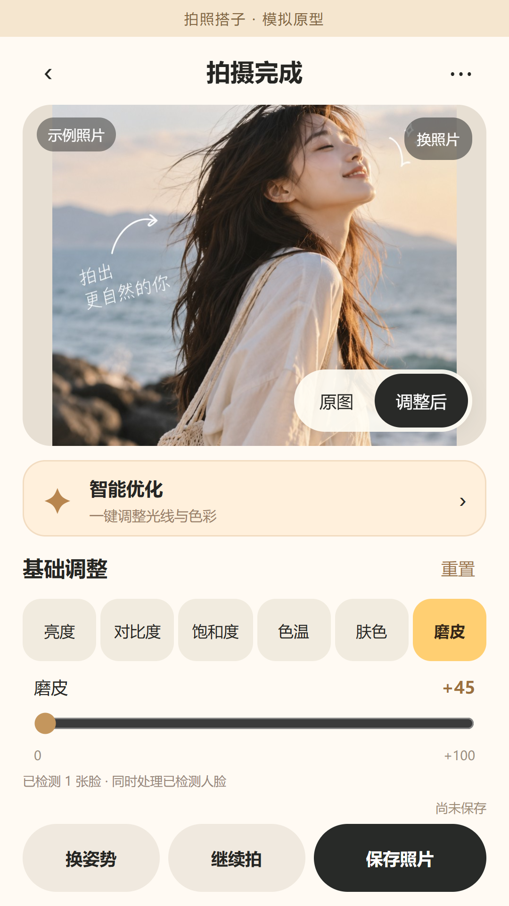

01 / INSPIRATION↗
先找到，适合你的姿势。
选择人物、场景与风格，
从手脚到视线，都有明确的参考。

YOUR PHOTO BUDDY
一点灵感，
留住每个喜欢的瞬间。

V1.5 页面示意 · Android 手机测试版
LET’S MAKE A MOMENT
姿势怎么摆，镜头怎么放。
你的下一张照片，从这里开始。
Android 10 及以上 · 正在检查下载文件
✦ 为 Android 用户准备的一点小灵感。
FROM A POSE TO A MEMORY
先找一点灵感，再把镜头摆好。
拍完轻轻调整，让这一刻更像你。
选择人物、场景与风格，
从手脚到视线，都有明确的参考。

加粗井字线、1–5× 变焦，
人物和摄影师，各自都有动作提示。
肤色、磨皮和基础色彩调整，
边看照片边修，随时对比原图。

当前为手机测试版，页面素材含原型示例。
更多真实拍摄体验，等你来试。